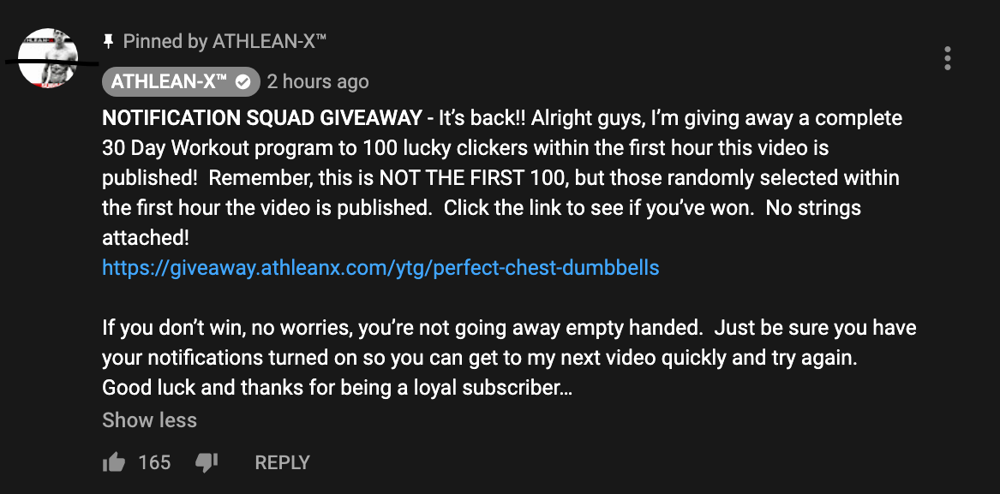

Every week Jeff Caveliere, Athlean-X.com, uploads YouTube videos. The moment after he uploads a video, he posts a comment that links to a free workout giveaway. The catch is that only 100 randomly selected individuals who click the link within 1 hour after it got posted win the giveaway.
The obvious question: how can we scam Jeff to harvest free workouts?

Usually when you click the giveaway link, it sends you to a page that says you lost. When you click the same link again, it sends you to the same page (ensuring that no single person can just click the link over and over again until he wins). However, how does Jeff's website tell that you've clicked the link multiple times?
It turns out that it's somehow linked to the HTTP Request Header that gets sent to Jeff's server when you click on the link. I found that by changing the User-Agent field in the header, it's as if you clicked the link for the first time, giving you another chance to win.
Hence, we can spam requests to the URL with different User-Agent fields, until we win.
The first step is to run code right after Jeff uploads a new video.
To do this, I used MIT's athena dialup for webspace to host a PHP script yt-upload.php. This script will be invoked as a callback to whenever Jeff uploads a video.
YouTube provides a convenient API to subscribe to channels and get notified whenever they upload. To subscribe, we need to find a topic URL in this form:
https://www.youtube.com/xml/feeds/videos.xml?channel_id=CHANNEL_ID
where CHANNEL_ID gets replaced by Athlean-X's YouTube Channel ID. This is an RSS feed, and we can use Google's PubSubHub API (link) to subscribe our yt-upload.php callback to the XML feed.
To do that succesfully, our PHP script has to echo the challenge code passed by pubsubhub like this:
if (isset($_GET['hub_challenge'])) {
echo $_GET['hub_challenge'];
exit();
}
Once that's done, we've sucessfully subscribed and whenever Jeff uploads a video, information about that video gets sent to the callback script as Post data that looks like this:
Host: tjz.scripts.mit.edu
Link: <https://www.youtube.com/xml/feeds/videos.xml?channel_id=UCe0TLA0EsQbE-MjuHXevj2A>; rel=self, <http://pubsubhubbub.appspot.com/>; rel=hub
Cache-Control: no-cache,max-age=0
Pragma: no-cache
Accept: */*
From: googlebot(at)googlebot.com
User-Agent: FeedFetcher-Google; (+http://www.google.com/feedfetcher.html)
Accept-Encoding: gzip,deflate,br
Connection: close
<?xml version='1.0' encoding='UTF-8'?>
<feed xmlns:yt="http://www.youtube.com/xml/schemas/2015" xmlns="http://www.w3.org/2005/Atom"><link rel="hub" href="https://pubsubhubbub.appspot.com"/><link rel="self" href="https://www.youtube.com/xml/feeds/videos.xml?channel_id=UCe0TLA0EsQbE-MjuHXevj2A"/><title>YouTube video feed</title><updated>2020-11-01T17:53:37.063351109+00:00</updated><entry>
<id>yt:video:H21MYZsw_2A</id>
<yt:videoId>H21MYZsw_2A</yt:videoId>
<yt:channelId>UCe0TLA0EsQbE-MjuHXevj2A</yt:channelId>
<title>7 Beginner Workout Mistakes You MUST Avoid!!</title>
<link rel="alternate" href="https://www.youtube.com/watch?v=H21MYZsw_2A"/>
<author>
<name>ATHLEAN-X™</name>
<uri>https://www.youtube.com/channel/UCe0TLA0EsQbE-MjuHXevj2A</uri>
</author>
<published>2020-11-01T17:53:04+00:00</published>
<updated>2020-11-01T17:53:37.063351109+00:00</updated>
</entry></feed>
The important part of this is the is the yt:videoId tag that holds the ID of the video that Jeff just uploaded. To make processing of this input easier, I decided to just append it to a log file and process the log file in a python script later.
ob_start();
$req_dump .= var_export($_GET)."\n\n---------------";
$req_dump .= var_export($_POST)."\n\n---------------";
$result = ob_get_clean();
$req_dump .= $result;
$fp = file_put_contents('request.log', $req_dump, FILE_APPEND);
ob_end_clean();
Because MIT Athena webspaces are very outdated and in general quite weird, I had to use nohup to ensure that the script gets executed in the background.
$out = shell_exec("nohup python3 pwn.py > /dev/null 2>&1 &");
As you might tell, pwn.py is where the magic happens. It gets executed when a video gets uploaded and it can parse the logfile to find which video got uploaded. Quick and dirty, we get the video ID:
f = open("request.log", "r", encoding="utf-8")
vid = f.read().split("<id>yt:video:")[-1].split("</id")[0]
f.close()
And then we use YouTube's Rest API to get a list of comments given the video ID. Like so:
s = "https://www.googleapis.com/youtube/v3/commentThreads?part=snippet&videoId={}&key={}".format(vid, api)
Note that you need to get a Google API key to use this API. Making a GET request to this URL will yield JSON which can be conveniently parsed and looped over to find the giveaway URL.
for comment in json["items"]:
author = comment["snippet"]["topLevelComment"]["snippet"]["authorDisplayName"]
content = comment["snippet"]["topLevelComment"]["snippet"]["textDisplay"]
if "ATHLEAN-X" in author:
url = content.split("href=\"")[1].split("\"")[0]
log("extractd url", url)
Obviously there is more error checking retry attempts and timeouts in the case of failure, but these are left out for brevity.
Now that we have the giveaway URL, we can start the main crunch. This is what it looks like:
while not won and time.time() - start_t < duration:
try:
agent = str(random.random())
log("making request with user agent: ", agent)
page, info, resp_url = get_page_as(url, agent)
if "please try again next time" in page.lower():
log("Failed...")
elif "this giveaway has expired" in page.lower():
log("Expired...")
else:
log(resp_url)
log(page)
log(agent)
log(info)
f = open("success", "w")
f.write(str(info) + '\n')
f.write(str(agent) + "\n---\n")
f.write(str(page))
f.close()
won = True
except:
pass
time.sleep(.2)
Here we make a request to the giveaway URL ever 0.2 seconds with a randomly generated useragent (just a random number) until we win or the timeout expires (after 10 minutes). The way winning works is that the URL will re-direct you to a different secret URL in the form of:
https://giveaway.athleanx.com/congrats.html?reg=LONG_RANDOM_STRING
This is the gold nugget. Once we see that we've won, we save this URL to a file called success, and then we can open it and enjoy the fruits of our labor whenever we want.
For those interested, here is how we change the user agent when making the request with python's outdated urllib2.
def get_page_as(url, ua):
req = urllib.request.Request(url)
req.add_header("User-Agent", ua)
with urllib.request.urlopen(req) as response:
return str(response.read(), 'utf-8'), response.info(), response.geturl()
Before you ask, "can i has source code pls" -- it's here.
Shoutout to my homie Jeff Caveliere for providing me the opportunity to steal from him and helping me make mad gainz. Big Respekt.